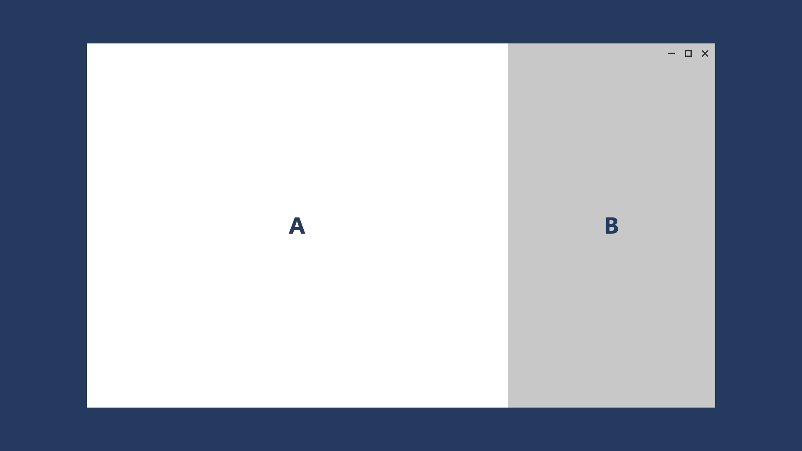
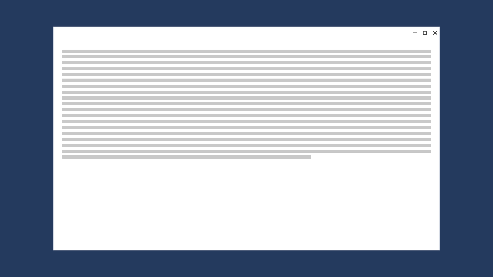
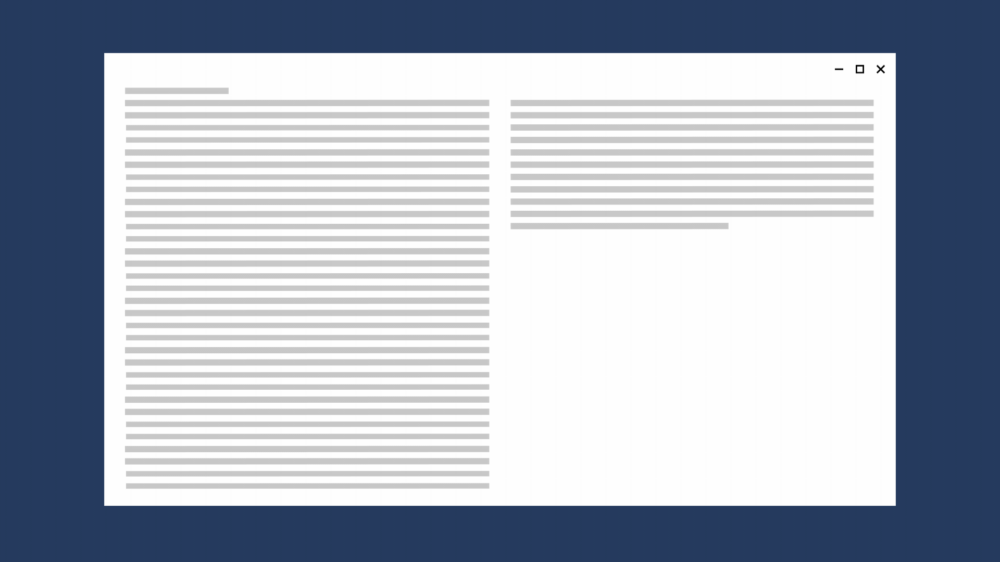
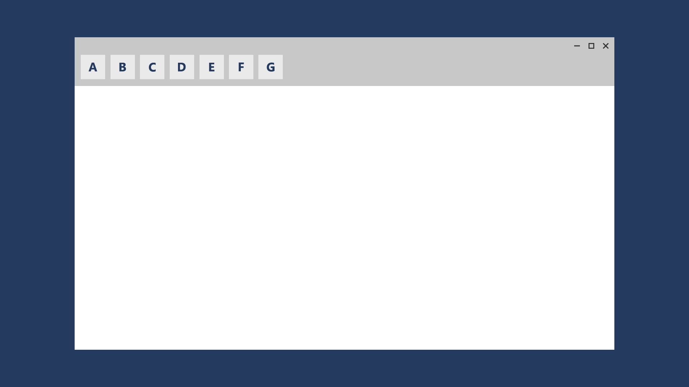
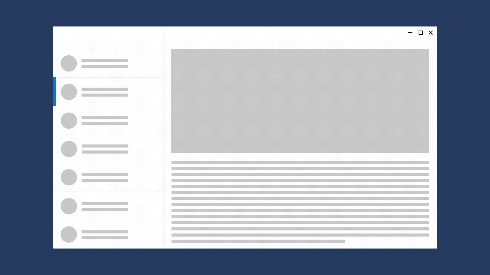
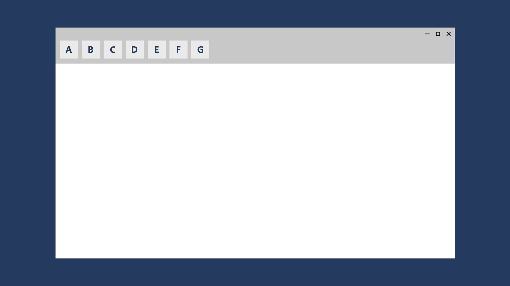

Responsive design techniques
Responsive design uses just one layout where the content is fluid and can adapt to changing window sizes. Responsive design lets you build a feature one time and expect it to work across all screen sizes. Adaptive design is similar, but replaces one layout with another layout.
XAML apps use effective pixels to guarantee that your UI will be legible and usable on all Windows-powered devices. So, why would you ever want to customize your app's UI for a specific device or screen size?
To make the most effective use of space and reduce the need to navigate
If you design an app to look good on a device that has a small screen, such as a tablet, the app will be usable on a PC with a much bigger display, but there will probably be some wasted space. You can customize the app to display more content when the screen is above a certain size. For example, a shopping app might display one merchandise category at a time on a tablet, but show multiple categories and products simultaneously on a PC or laptop.
By putting more content on the screen, you reduce the amount of navigation that the user needs to perform.
To take advantage of devices' capabilities
Certain devices are more likely to have certain device capabilities. For example, laptops are likely to have a location sensor and a camera, while a TV might not have either. Your app can detect which capabilities are available and enable features that use them.
To optimize for input
The universal control library works with all input types (touch, pen, keyboard, mouse), but you can still optimize for certain input types by re-arranging your UI elements.
When you optimize your app's UI for specific screen widths, we say that you're creating a responsive design. Here are some responsive design techniques you can use to customize your app's UI.
Reposition
You can alter the location and position of UI elements to make the most of the window size. In this example, the smaller window stacks elements vertically. When the app translates to a larger window, elements can take advantage of the wider window width.

In this example design for a photo app, the photo app repositions its content on larger screens.
Resize
You can optimize for the window size by adjusting the margins and size of UI elements. For example, this could augment the reading experience on a larger screen by simply growing the content frame.

Reflow
By changing the flow of UI elements based on device and orientation, your app can offer an optimal display of content. For instance, when going to a larger screen, it might make sense to add columns, use larger containers, or generate list items in a different way.
This example shows how a single column of vertically scrolling content on a smaller screen that can be reflowed on a larger screen to display two columns of text.

Show/hide
You can show or hide UI elements based on screen real estate, or when the device supports additional functionality, specific situations, or preferred screen orientations.

For example, media player controls reduce the button set on smaller screens and expand on larger screens. The media player on a larger window can handle far more on-screen functionality than it can on a smaller window.
Part of the reveal-or-hide technique includes choosing when to display more metadata. With smaller windows, it's best to show a minimal amount of metadata. With larger windows, a significant amount of metadata can be surfaced. Some examples of when to show or hide metadata include:
- In an email app, you can display the user's avatar.
- In a music app, you can display more info about an album or artist.
- In a video app, you can display more info about a film or a show, such as showing cast and crew details.
- In any app, you can break apart columns and reveal more details.
- In any app, you can take something that's vertically stacked and lay it out horizontally. When going from a small window to a larger window, stacked list items can change to reveal rows of list items and columns of metadata.
Re-architect
You can collapse or fork the architecture of your app to better target specific devices. In this example, expanding the window shows the entire list/details pattern.

Adaptive layout
An adaptive layout is similar to responsive layout, but entirely replaces UI based on the format it's presented in. Adaptive design has multiple fixed layout sizes and triggers the page to load a given layout based on the available space.
This technique lets you switch the user interface for a specific breakpoints. In this example, the nav pane and its compact, transient UI works well for a smaller screen, but on a larger screen, tabs might be a better choice.

The NavigationView control supports this technique by letting users set the pane position to either top or left.